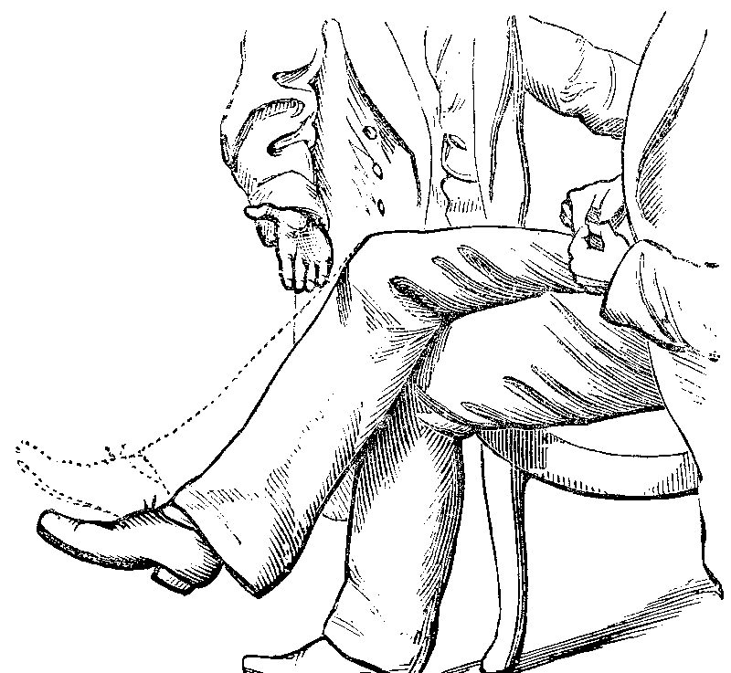

Do Now
1Ordne die Stationen beim Reflex an der heißen Herdplatte. Schreibe sie in der richtigen Reihenfolge ins Heft:
sen-so-ri-scher Nerv, mo-to-ri-scher Nerv, Rü-cken-mark
Sinneszellen in der Haut, sensorischer Nerv, Rückenmark, motorischer Nerv, Muskel
Impuls

W. R. Gowers, Lehrbuch für Ärzte, 1886. Gemeinfrei (Wikimedia Commons).Der Arzt klopft unter die Kniescheibe von Herrn K.
Das Bein zuckt nicht.
Herr K. kann sein Bein aber ganz normal strecken.
Fragenentwicklung
Erarbeitung
Unsere Frage:
1Führt den Kniesehnenreflex zu zweit durch.●○○
2Ordne die Stationen im Lernmodul (Aufgabe 1).●○○
3Erkläre, warum man das Bein kaum festhalten kann.●●○
4Erkläre, was bei Herrn K. gestört sein kann.●●●
Vergleich
Linealfangen (Nr. 1): etwa 0,2 Sekunden.
Kniesehnenreflex: etwa 0,03 Sekunden.
1Berechne, wie viel Mal schneller der Reflex ist.●○○
2Erkläre den Unterschied mit dem Weg des Signals.●●○
3Beurteile: „Beim Linealfangen entscheide ich, ob ich zugreife.“●●●
Zu dritt ins Heft, 8 Minuten. Hilfe: Beim Reflex wird das Signal im … umgeschaltet.Sicherung
| Reflex | Reaktion | |
|---|---|---|
| Weg | im Rückenmark umgeschaltet, ohne Gehirn | bis ins Gehirn und zurück |
| Dauer | etwa 0,03 Sekunden | etwa 0,2 Sekunden |
| beeinflussbar? | nein, immer gleich | ja, durch Übung oder Ablenkung |
Exit-Ticket
1Frau M. ist das Rückenmark in Höhe der Brust verletzt. Sie kann ihre Beine nicht mehr bewegen. Beim Klopfen zuckt ihr Bein trotzdem. Erkläre, warum.●●○
2Notiere: Was könnte deine Reaktionszeit beim Linealfangen länger machen?●○○
Allein auf den Zettel, 4 Minuten